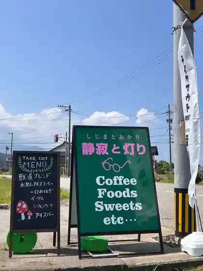
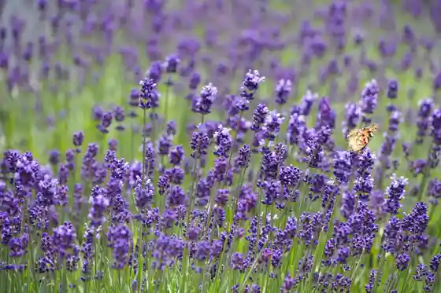
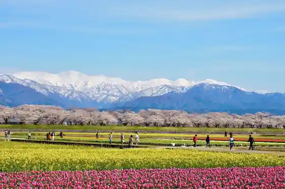

Seijaku to Akari
Asahimachi, Toyama · Official / source link

Herbal Valley Ogawa
Asahimachi, Toyama · 0765-83-1100 · Official / source link

Asahi Fune Kawa (Haru no Shijuso) / Fune Kawa Beri Sakura Namiki
Asahimachi, Toyama · 0765-83-2780 · Official / source link

Kyo Mokaeritai Melon et Cafe Kyomokaeritai Meron E Kafe
Asahimachi, Toyama · 0765-57-5255 · Official / source link
Daibubesu 37
Asahimachi, Toyama · 090-3238-0037 · Official / source link
Nambo Fuji
Asahimachi, Toyama · 0765-83-2780 · Official / source link
Hikyo no Kita Mata Sansaku
Asahimachi, Toyama · 0765-83-2780 · Official / source link
Makkii Farm
Asahimachi, Toyama · 0765-32-3790 · Official / source link
Kojiya Sakaguchi Ya Jozo Mise
Asahimachi, Toyama · 0765-82-2548 · Official / source link
Itadakimasu
Asahimachi, Toyama · Official / source link
SLOWELL COFFEE Suroeru Kohii
Asahimachi, Toyama · Official / source link
Akagawa Yaki (Koshiyama Bo)
Asahimachi, Toyama · 0765-83-3700 · Official / source link
Asahimachi Ritsu Furusato Art Museum
Asahimachi, Toyama · 0765-82-0094 · Official / source link
Bisutoro Kezakeza
Asahimachi, Toyama · 0765-32-5795 · Official / source link
Go Sa Michi Haku Mise Gosaro
Asahimachi, Toyama · 0765-82-1692 · Official / source link
Shio Kojoato no Shimizu
Asahimachi, Toyama · Official / source link
Batabata Cha Densho Kan
Asahimachi, Toyama · 0765-84-8870 · Official / source link
Sasagawa Togei Center (Sasagawa Yaki)
Asahimachi, Toyama · 0765-83-2918 · Official / source link
Hayashi Shuzo Ba
Asahimachi, Toyama · 0765-82-0384 · Official / source link
Owashi Yama
Asahimachi, Toyama · 0765-83-2780 · Official / source link
Gangu & Fujinfuku Donkii Gangu
Asahimachi, Toyama · 0765-83-2139 · Official / source link
Wa Saidan Hassaku
Asahimachi, Toyama · 0765-83-1322 · Official / source link
Yubi Mo no cassetta
Asahimachi, Toyama · 0765-83-0755 · Official / source link
Ongaku Yume Workshop Goto Sei Ya Memorial Museum
Asahimachi, Toyama · 080-6364-3543 · Official / source link
O Shokuji Tokoro Ketsu Oshokujidokoro Yui
Asahimachi, Toyama · 0765-83-0707 · Official / source link
Kashi Tokoro Mizushima
Asahimachi, Toyama · 0765-82-0207 · Official / source link
Guriru Matsu
Asahimachi, Toyama · 0765-83-0006 · Official / source link
Ware Bo Gabo
Asahimachi, Toyama · 0765-83-1651 · Official / source link
Shokusai Asahi
Asahimachi, Toyama · 0765-82-1093 · Official / source link
Cafe Fukami Kafe Fukami
Asahimachi, Toyama · 0765-83-3030 · Official / source link
Supu to Suiitsu Nanae nanahoshi
Asahimachi, Toyama · 070-8973-9770 · Official / source link
Cafe Kansuke Kafe
Asahimachi, Toyama · 090-3556-7728 · Official / source link
Shimizu Seipan
Asahimachi, Toyama · 0765-82-0507 · Official / source link
Terada Sengyoten
Asahimachi, Toyama · 0765-82-0152 · Official / source link
Uta Masa En
Asahimachi, Toyama · 0765-83-0275 · Official / source link
Ki Village Mame Kashi Mise
Asahimachi, Toyama · 0765-82-0416 · Official / source link
Sakae Shokudo
Asahimachi, Toyama · 0765-83-3355 · Official / source link
Genki Ra Men Genkira Men
Asahimachi, Toyama · 0765-83-1222 · Official / source link
Soba Tokoro Kusa no Ko
Asahimachi, Toyama · 0765-83-9541 · Official / source link
Sake Tokoro Shokuji Tokoro Kanda Sakedokoro Shokujidokoro Kanda
Asahimachi, Toyama · 0765-83-2725 · Official / source link
Doraibuin Kanamori
Asahimachi, Toyama · 0765-83-1525 · Official / source link
Shusai Izumi Sakana Izumi
Asahimachi, Toyama · 0765-83-2212 · Official / source link
Ryotei Tsukimi Ie
Asahimachi, Toyama · 0765-82-0172 · Official / source link
Sakai no Gokokuji (Shakunage Tera)
Asahimachi, Toyama · 0765-83-3157 · Official / source link
Go Sa Michi Kurosufaibu (Fuyu no Irumineshon) Gosarokurosufaibu Fuyu no Irumineshon
Asahimachi, Toyama · 0765-83-2280 · Official / source link
Omu Ra Kashi Ho
Asahimachi, Toyama · 0765-82-0422 · Official / source link
Tanayama Gorufu Kurabu
Asahimachi, Toyama · 0765-84-8800 · Official / source link
Go Sa Michi Kurosufaibu (Mamenake Market)
Asahimachi, Toyama · 0765-83-3802 · Official / source link
Kankyo Fureai Shisetsu Rakuchi no Kankyofureaishisetsu Rakuchi no
Asahimachi, Toyama · 0765-82-0990 · Official / source link
Maibun KAN
Asahimachi, Toyama · 0765-83-0118 · Official / source link
Kita Arupusu Asahimachi Gaku Asahimachi Koya
Asahimachi, Toyama · 090-4573-4410 · Official / source link
Takara Onsen
Asahimachi, Toyama · 0765-83-3356 · Official / source link
Yusuhosuteru Tenko Tera
Asahimachi, Toyama · 0765-83-3339 · Official / source link
Doraibuin Kinkai
Asahimachi, Toyama · 0765-83-1870 · Official / source link
Ryokan Shiroyama So
Asahimachi, Toyama · 0765-82-0280 · Official / source link
Ryokan
Asahimachi, Toyama · 0765-82-0303 · Official / source link
Guest House Kyuzaemon
Asahimachi, Toyama · Official / source link
Ryori Ryokan Mon Hidari Ryoriryokan Monza
Asahimachi, Toyama · 0765-82-0011 · Official / source link
Fune Kawa Berihimawari
Asahimachi, Toyama · 0765-83-2780 · Official / source link
Meiji Memorial Museum (Anzai Tokoro)
Asahimachi, Toyama · 0765-83-0574 · Official / source link
Kashima Juso (Miyazaki Shizen Museum)
Asahimachi, Toyama · 0765-83-1100 · Official / source link
Hisui Kaigan Kanko Koryu Kyoten Shisetsu Hisuiterasu
Asahimachi, Toyama · 0765-83-3015 · Official / source link
Fudo Do Iseki
Asahimachi, Toyama · 0765-83-0118 · Official / source link
Asahimachi Rekishi Park (Kyu Kawakami Ie)
Asahimachi, Toyama · 0765-83-1950 · Official / source link
Mibu Guriin Land (Campground) Mitsuboguriinrando (Kyanpujo)
Asahimachi, Toyama · 0765-83-1100 · Official / source link
Fune Kawa Beri Higan Hana no Makka Na Jutan
Asahimachi, Toyama · 0765-83-2780 · Official / source link
Fune Kawa Beri Tambo Ato
Asahimachi, Toyama · 0765-83-2780 · Official / source link
Shiroyama Park
Asahimachi, Toyama · 0765-83-1100 · Official / source link
Ryori Ryokan Ariiso
Asahimachi, Toyama · 0765-82-0768 · Official / source link
Sushi Hyotan
Asahimachi, Toyama · 0765-82-0380 · Official / source link
Ogawa Onsen Motoyu Hotel Ogawa
Asahimachi, Toyama · 0765-84-8111 · Official / source link
Nittobibarejji Nittobibarejji Kabushikigaisha
Asahimachi, Toyama · 0765-82-1133 · Official / source link
Asahimachi Bunka Taiiku Center (Sanriina) Asahimachibunkataiikusenta (Sanriina)
Asahimachi, Toyama · 0765-83-1838 · Official / source link
Hyaku Fugu Art Museum
Asahimachi, Toyama · 0765-83-0100 · Official / source link
Basho Kuhi
Asahimachi, Toyama · 0765-83-1100 · Official / source link
Tanayama Famirii Land
Asahimachi, Toyama · 0765-84-8408 · Official / source link
Sakai Ichiri Tsuka
Asahimachi, Toyama · 0765-83-1100 · Official / source link
Nanairo KAN Nanairokan
Asahimachi, Toyama · 0765-83-3700 · Official / source link
Asahimachi Hisui Kaigan Oto Campground
Asahimachi, Toyama · 0765-83-0106 · Official / source link
Hisui Coast (Miyazaki Sakai Coast) Hisuikaigan (Miyazaki Sakaikaigan)
Asahimachi, Toyama · 0765-83-2780 · Official / source link
Asahimachi Town Hall
Asahimachi, Toyama · 0765-83-1100 · Official / source link